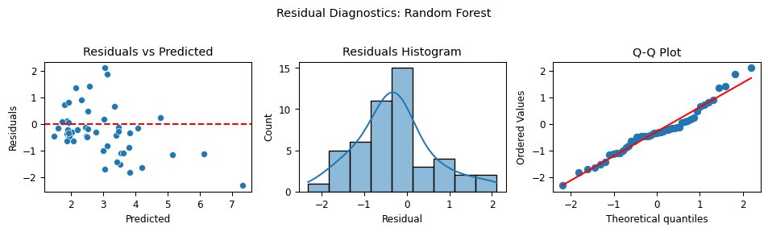

import seaborn as sns
import pandas as pd
from minieda import summarize # pip install git+https://github.com/dbolotov/minieda.git
import time
from pprint import pprint
from sklearn.linear_model import LinearRegression, Lasso, Ridge
from sklearn.ensemble import RandomForestRegressor
from sklearn.neighbors import KNeighborsRegressor
from xgboost import XGBRegressor
from sklearn.model_selection import train_test_split
from sklearn.compose import ColumnTransformer
from sklearn.preprocessing import OneHotEncoder, StandardScaler
from sklearn.pipeline import Pipeline
from sklearn.model_selection import GridSearchCV
from sklearn.metrics import root_mean_squared_error, mean_absolute_error, r2_score
from scipy import stats
import matplotlib.pyplot as plt
plt.rcParams.update({'font.size': 9}) # set global plot params
pd.set_option("display.width", 220) # set display width for printed tables
# Load dataset and display first few rows
df = sns.load_dataset("tips")
print("----- SCRIPT OUTPUT -----")
print("\n----- First Few Rows of Data -----\n")
print(df.head())
# Display summary
print("\n----- Data Summary -----\n")
print(summarize(df))
# Define columns
cat_cols = ['sex', 'smoker', 'day', 'time']
num_cols = ['total_bill', 'size']
# Split the data
X = df[cat_cols + num_cols]
y = df['tip']
# Split into training and test
X_train, X_test, y_train, y_test = train_test_split(
X, y, test_size=0.2, random_state=42
)
# Define preprocessing for numeric and categorical features
numeric_preprocessing = Pipeline([
('scale', StandardScaler())
])
categorical_preprocessing = Pipeline([
('encode', OneHotEncoder(drop='first', sparse_output=False)) # one-hot; drop first feature to avoid multicollinearity
])
# Combine into a column transformer
preprocessor = ColumnTransformer([
('num', numeric_preprocessing, num_cols),
('cat', categorical_preprocessing, cat_cols)
])
# Define models and hyperparameters to optimize
models = [
{
"name": "LinearRegression",
"estimator": LinearRegression(),
"param_grid": None
},
{
"name": "Ridge",
"estimator": Ridge(),
"param_grid": {
"model__alpha": [0.1, 1.0, 10.0]
}
},
{
"name": "Lasso",
"estimator": Lasso(),
"param_grid": {
"model__alpha": [0.1, 1.0, 10.0]
}
},
{
"name": "RandomForest",
"estimator": RandomForestRegressor(random_state=42),
"param_grid": {
"model__n_estimators": [20,30],
"model__max_depth": [None, 10],
"model__min_samples_split": [2, 5]
}
},
{
"name": "KNN",
"estimator": KNeighborsRegressor(),
"param_grid": {
"model__n_neighbors": [3, 5, 7]
}
},
{
"name": "XGBoost",
"estimator": XGBRegressor(random_state=42, verbosity=0),
"param_grid": {
"model__n_estimators": [30, 50],
"model__learning_rate": [0.1, 0.3],
"model__max_depth": [3, 6]
}
}
]
results = []
print("\n----- GRID SEARCH WITH BEST RESULT ON TRAIN AND TEST SETS -----")
start_time = time.time()
trained_models = {}
for m in models:
print(f"\n--- {m['name']} ---")
pipeline = Pipeline([('pre', preprocessor), ('model', m["estimator"])])
if m["param_grid"]:
search = GridSearchCV(
pipeline,
m["param_grid"],
scoring="neg_root_mean_squared_error", # RMSE
cv=3,
n_jobs=-1,
verbose=1
)
search.fit(X_train, y_train)
best_model = search.best_estimator_
print("Best params:", search.best_params_)
else: #if no parameters to optimize
pipeline.fit(X_train, y_train)
best_model = pipeline
trained_models[m["name"]] = best_model
# Predict and evaluate on both train and test
y_train_pred = best_model.predict(X_train)
y_test_pred = best_model.predict(X_test)
train_rmse = root_mean_squared_error(y_train, y_train_pred)
test_rmse = root_mean_squared_error(y_test, y_test_pred)
train_mae = mean_absolute_error(y_train, y_train_pred)
test_mae = mean_absolute_error(y_test, y_test_pred)
train_r2 = r2_score(y_train, y_train_pred)
test_r2 = r2_score(y_test, y_test_pred)
print("")
print(f"{'Metric':<6} | {'Train':>6} | {'Test':>6}")
# print("-" * 24)
print(f"{'RMSE':<6} | {train_rmse:>6.4f} | {test_rmse:>6.4f}")
print(f"{'MAE':<6} | {train_mae:>6.4f} | {test_mae:>6.4f}")
print(f"{'R²':<6} | {train_r2:>6.4f} | {test_r2:>6.4f}")
# results.append({
# "model": m["name"],
# "rmse": rmse,
# "mae": mae,
# "r2": r2
# })
results.append({
"model": m["name"],
"train_rmse": train_rmse,
"test_rmse": test_rmse,
"train_mae": train_mae,
"test_mae": test_mae,
"train_r2": train_r2,
"test_r2": test_r2
})
print(f"\nGrid search completed in {time.time() - start_time:.2f} seconds")
print("\n----- EVALUATION SUMMARY -----\n")
print(pd.DataFrame(results).sort_values("test_rmse", ascending=False))
print("\n")
def plot_residual_diagnostics(y_true, y_pred, model_name="Model"):
residuals = y_true - y_pred
fig, axes = plt.subplots(1, 3, figsize=(10, 3))
fig.suptitle(f"Residual Diagnostics: {model_name}")
# 1. Residuals vs Predicted
sns.scatterplot(x=y_pred, y=residuals, ax=axes[0])
axes[0].axhline(0, color="red", linestyle="--")
axes[0].set_xlabel("Predicted")
axes[0].set_ylabel("Residuals")
axes[0].set_title("Residuals vs Predicted")
# 2. Histogram of residuals
sns.histplot(residuals, kde=True, ax=axes[1])
axes[1].set_title("Residuals Histogram")
axes[1].set_xlabel("Residual")
# 3. Q-Q Plot
stats.probplot(residuals, dist="norm", plot=axes[2])
axes[2].set_title("Q-Q Plot")
axes[2].get_lines()[0].set_color("tab:blue") # points
axes[2].get_lines()[1].set_color("red") # reference line
plt.tight_layout(rect=[0, 0, 1, 0.95])
plt.show()
y_test_pred = trained_models["RandomForest"].predict(X_test)
plot_residual_diagnostics(y_test, y_test_pred, model_name="Random Forest")
# Predict on a new example
new_sample = pd.DataFrame([{
'sex': 'Female',
'smoker': 'No',
'day': 'Sun',
'time': 'Dinner',
'total_bill': 40.0,
'size': 2
}])
# Predict on fictional sample with each model
predictions = []
for model_name, model in trained_models.items():
pred = model.predict(new_sample)[0]
predictions.append({"model": model_name, "predicted_tip": round(pred, 2)})
# Display predictions
print("----- PREDICTIONS ON NEW SAMPLE -----")
print("\n----- Sample Input -----")
print(new_sample)
print("\n----- Sample Predictions -----\n")
print(pd.DataFrame(predictions).sort_values("predicted_tip", ascending=False))----- SCRIPT OUTPUT -----
----- First Few Rows of Data -----
total_bill tip sex smoker day time size
0 16.99 1.01 Female No Sun Dinner 2
1 10.34 1.66 Male No Sun Dinner 3
2 21.01 3.50 Male No Sun Dinner 3
3 23.68 3.31 Male No Sun Dinner 2
4 24.59 3.61 Female No Sun Dinner 4
----- Data Summary -----
dtype count unique unique_perc missing missing_perc zero zero_perc top freq mean std min 50% max skew
total_bill float64 244 229 93.85 0 0.0 0 0.0 19.79 8.9 3.07 17.8 50.81 1.13
tip float64 244 123 50.41 0 0.0 0 0.0 3.0 1.38 1.0 2.9 10.0 1.47
size int64 244 6 2.46 0 0.0 0 0.0 2.57 0.95 1.0 2.0 6.0 1.45
sex category 244 2 0.82 0 0.0 0 0.0 Male 157
smoker category 244 2 0.82 0 0.0 0 0.0 No 151
day category 244 4 1.64 0 0.0 0 0.0 Sat 87
time category 244 2 0.82 0 0.0 0 0.0 Dinner 176
----- GRID SEARCH WITH BEST RESULT ON TRAIN AND TEST SETS -----
--- LinearRegression ---
Metric | Train | Test
RMSE | 1.0491 | 0.8387
MAE | 0.7600 | 0.6671
R² | 0.4582 | 0.4373
--- Ridge ---
Fitting 3 folds for each of 3 candidates, totalling 9 fits
Best params: {'model__alpha': 10.0}
Metric | Train | Test
RMSE | 1.0507 | 0.8283
MAE | 0.7623 | 0.6657
R² | 0.4567 | 0.4511
--- Lasso ---
Fitting 3 folds for each of 3 candidates, totalling 9 fits
Best params: {'model__alpha': 0.1}
Metric | Train | Test
RMSE | 1.0615 | 0.7824
MAE | 0.7777 | 0.6548
R² | 0.4454 | 0.5102
--- RandomForest ---
Fitting 3 folds for each of 8 candidates, totalling 24 fits
Best params: {'model__max_depth': 10, 'model__min_samples_split': 2, 'model__n_estimators': 30}
Metric | Train | Test
RMSE | 0.4436 | 0.9459
MAE | 0.3313 | 0.7394
R² | 0.9032 | 0.2842
--- KNN ---
Fitting 3 folds for each of 3 candidates, totalling 9 fits
Best params: {'model__n_neighbors': 5}
Metric | Train | Test
RMSE | 0.9195 | 0.9025
MAE | 0.6846 | 0.7160
R² | 0.5839 | 0.3484
--- XGBoost ---
Fitting 3 folds for each of 8 candidates, totalling 24 fits
Best params: {'model__learning_rate': 0.1, 'model__max_depth': 3, 'model__n_estimators': 30}
Metric | Train | Test
RMSE | 0.7910 | 0.8755
MAE | 0.5830 | 0.7102
R² | 0.6920 | 0.3868
Grid search completed in 2.86 seconds
----- EVALUATION SUMMARY -----
model train_rmse test_rmse train_mae test_mae train_r2 test_r2
3 RandomForest 0.443583 0.945898 0.331275 0.739375 0.903152 0.284205
4 KNN 0.919482 0.902499 0.684636 0.716000 0.583873 0.348381
5 XGBoost 0.791011 0.875502 0.583020 0.710206 0.692033 0.386783
0 LinearRegression 1.049133 0.838664 0.759965 0.667133 0.458249 0.437302
1 Ridge 1.050658 0.828321 0.762260 0.665704 0.456673 0.451095
2 Lasso 1.061543 0.782438 0.777739 0.654809 0.445356 0.510221
----- PREDICTIONS ON NEW SAMPLE -----
----- Sample Input -----
sex smoker day time total_bill size
0 Female No Sun Dinner 40.0 2
----- Sample Predictions -----
model predicted_tip
0 LinearRegression 4.93
3 RandomForest 4.78
1 Ridge 4.77
2 Lasso 4.63
5 XGBoost 4.39
4 KNN 3.50